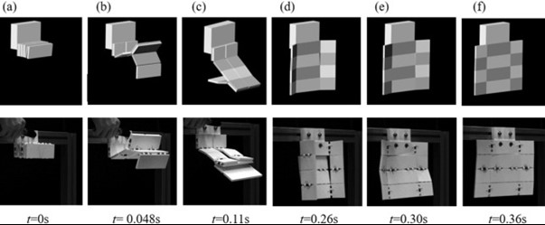

URN 6839172
Origami has always interested me: how complex 3d structures can be created by simple folds. I think space structures are some of the
most complex structures our society creates, so I set out to research if Origami is being used in space development. I first had to
understand what challenges might stop origami from being used. I found that it is difficult to model origami folds currently so there
is limited use although there is a lot of interest in using origami for solar sails. Nasa is doing further research on modelling origami
but did use some simple folding techniques on the James web telescope and Japan has had success using origami folds in their solar sails,
and we will look at these in greater depth.
Origami is the Japanese art of folding paper; it is primarily used to create decorative pieces. Many people have seen, and some made, an origami crane. In approximately 20 folds you can turn a flat piece of paper into a complex crane. If you have attempted to make a crane, then you may have noticed that despite having strict instructions there is a degree of flexibility to each fold: no folds need to be perfect to obtain a recognisable crane. Paper and human creation allows for some error in each fold however if you where to use origami in space there needs to be no errors. To make sure that is possible we need to model the folds.
“An important concept in applying origami to engineering, is the notion of ‘rigid’ origami. This assumes that the material does not
bend or stretch between the fold lines and can be modelled effectively as rigid panels connected by frictionless hinges. A more relaxed
definition is ‘isometric’ Origami, where the material can bend but not stretch” (Schenk,2014)
one model that has had reasonable success was one mainly based on rigid origami although they also added systems to measure internal stress
due to flexibility. (Zheng,2023)
To model two panels as seen in figure 1 (a) first they split each panel into 4 hexagonal elements, each made up of 8 particles. To prevent
the panels passing through each other using surface-to-surface contact, elements were set up between particles in hexagonal elements as
seen by the light blue shade in figure 1 (b). The dark blue is where the surface-to-surface contact elements would be tested when the model
was run. How the panels move is controlled by the particles moving, and how the particles are connected. The particles have three
translational degrees of freedom (DOFs)i.e., they can move in an x, y and z plane. At the hinge between panels the particles are connected
so can be coupled and therefore the panels are now modelled as being connected. In a truly ridged system only bar-to-bar elements would be
required to connect particles but by establishing a bar-to-bar spring element the model can now obtain data about strain and energy of real
panels during deployment. (Chen,2015)
figure.1 visualisations of two panels and how to model them
A paper to study this showed the deployment predicted from this model had small motion differences from the modelled movement as seen in
figure 2. however, they estimated this deviation might be due to the aerodynamic drag and the non-constant spring stiffness. (Jingyi,2022)
this shows we are getting much closer to modelling origami and the more accurate the model the more we can apply these uses in space.

figure 2. row 1 shows the predicted movement of the panels and row two shows the actual deployment
The James Webb telescope successfully used simple origami techniques to fold a large lens so it would fit in a rocket. Although the
fold may seem relatively simple in terms of Origami “This was the first time a NASA-led mission had ever attempted to complete a complex
sequence to unfold an observatory in space “– a remarkable feat for our team, NASA, and the world.” Gregory L. Robinson, Webb program
director at NASA Headquarters. (Nasa,2022)
One area that is seeing a lot of development is the idea of using Origami for solar sails. True solar sailing is where a vessel could
be powered by the pressure from photons. however most solar sails also use the large sail as a solar panel as well to generate power.
[6] Unlike the James Webb telescope a solar sail can be flexible but it still needs to deploy in a consistent way. A multiple step
folding pattern may be easier to fold on earth by human but in space a multistep process is much harder to perform. This is where the
usefulness of origami comes in, there are many patterns designed to unfold a panel in one motion.(Wonder Dome, no date)
insert figure here (Bain,2022)
“One of the best examples of this … is the Miura-ori or Miura fold, devised in 1970 by Dr. Miura Koryo. The Miura fold is a folding
technique that allows even a large sheet of paper to be quickly opened out and stowed again by simply pushing and pulling on its
diagonals.” See figure 3. (Sasaki ,2021)
fig 3 shows the unfolding of a Miura fold source (Bain,2022)
NASA had an unsuccessful attempt at demonstrating the use of solar sails (Nasa,2023) however Japan’s Aerospace Exploration Agency
(JAXA) launched IKAROS on 20 May 2010. (Jaxa, no date - a) It was successful in proving the viability of navigationusing a
combination of solar sails and solar power. The sail of the IKAROS is approximately 20 meters in diagonal length and is as thin as
0.0075 mm. It deployed in two stages: the first stage was controlled by an inboard deployment mechanism; the secondbstage was the
spinning of IKAROS to dynamically deploy the sail. (Jaxa, no date - b) see figure 4. The dynamic movement was inspired by Origami
folds and by continuing to have IKAROS rotate in space that would provide a constant force so the sail wouldn’t collapse or require a
support boom.
Figure 4. shows the stages of deployment
As many places are researching how to model origami folds (NASA has said they are working on it (Fulton,2023)) and there has already
been some success such as IKAROS, I believe Origami has already proven its usefulness for space development. I wonder whether specific
folds will inspire more structures such as the Miura fold inspiring IKAROS or if there will be a broader use of Origami to the point
where it will no longer be credited to Origami it will just be the way of folding for space use.
Schenk, M., Viquerat, A., Seffen, K. and Guest, S. (2014) ‘Review of Inflatable Booms for Deployable Space Structures: Packing and Rigidization.’, Journal of Spacecraft and Rockets, 51(3), pp. 762–778. Available at:surrey.primo.exlibrisgroup.com/discovery/delivery?vid=44SUR_INST:ResearchRepository&repId=12138977060002346# (Accessed: 30 Nov 2023).
Zheng, Y., Wu, H., Li, S., Zhang, J., Yang, C. and Luo, Y. (2023) ‘Analysis of dynamic process of thick-panel origami structures based on finite particle method.’ Engineering structures, 295, Available at:https://doi.org/10.1016/j.engstruct.2023.116761
Chen, Y., Peng, R., and You, Z. (2015). ‘Origami of thick panels.’ Science, 349(6246), pp. 396–400. Available at:https://www-jstor-org.surrey.idm.oclc.org/stable/24748528?sid=primo&seq=5 (Accessed: 30 Nov 2023).
Jingyi, Y., Yunlan, Z., Manolis, C. and Zhong, Y. (2022) ‘Folding and deploying identical thick panels with spring-loaded hinges’ Extreme Mechanics Letters, 52, Available at:https://doi.org/10.1016/j.eml.2022.101637
NASA (2022) NASA’s Webb Telescope Reaches Major Milestone as Mirror Unfolds. Available at:https://www.nasa.gov/news-release/nasas-webb-telescope-reaches-major-milestone-as-mirror-unfolds/ (Accessed: 30 Nov 2023).
Sasaki, T. (2021) Origami Techniques Applied to Space Development, Available at:https://www.gov-online.go.jp/eng/publicity/book/hlj/html/202112/202112_05_en.html. (Accessed: 30 Nov 2023).
WONDER DOME (no date) Origami and how we use it to explore space. Available at:https://wonderdome.co.uk/space-origami/#:~:text=The%20most%20famous%20example%20of,it%20in%20a%20single%20movement. (Accessed: 30 Nov 2023).
Bain, I. (no date) The Miura-Ori map, Available at:https://www.britishorigami.org/cp-resource/the-miura-ori-map/. (Accessed: 30 Nov 2023).
NASA (2023) Solar Sail Demonstrator, Available at:https://www.nasa.gov/tdm/solar-sail-demonstrator-sunjammer/. (Accessed: 30 Nov 2023).
Jaxa (no date - a) IKAROS Small Scale Solar Powered Sail Demonstration Satellite, Available at:https://www.isas.jaxa.jp/en/missions/spacecraft/current/ikaros.html. (Accessed: 30 Nov 2023).
Jaxa (no date - b) IKAROS Mission Overview, Available at:https://global.jaxa.jp/countdown/f17/overview/ikaros_e.html. (Accessed: 30 Nov 2023).
Fulton, J. (2023) Dynamics Analysis of Origami-Folded Deployable Space Structures with Elastic Hinges, Available at:https://www.nasa.gov/directorates/stmd/space-tech-research-grants/dynamics-analysis-of-origami-folded-deployable-space-structures-with-elastic-hinges/. (Accessed: 30 Nov 2023).
Table of contents |
|---|
| ref to abstract |
| ref to introduction |
| ref to modelling |
| ref to Ways origami has already been used in space |
| ref to Conclusion |
| ref to refrences |